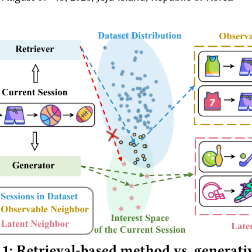
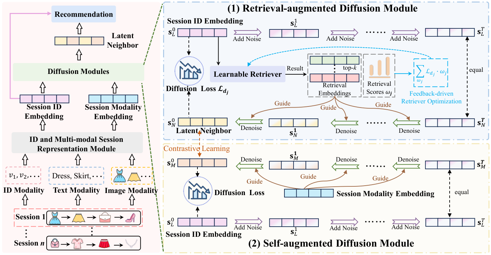

Unleashing the Potential of Neighbors: Diffusion-based Latent Neighbor Generation for Session-based Recommendation (释放邻居潜力：面向会话推荐的扩散式潜在邻居生成)
- 会议/期刊: KDD 2026
- 作者与机构: Yuhan Yang, Jie Zou, Guojia An, Jiwei Wei, Yang Yang, Heng Tao Shen（电子科技大学）
- 推荐链路定位: 召回（会话级候选增强）
- 研究方向: 序列与会话推荐 / 生成式推荐
- 论文原文: 论文原文链接
- 开源代码: 暂未开源
TL;DR (1分钟核心速览)
匿名会话推荐（SBR）因会话短、无用户画像而严重稀疏，主流做法是检索历史相似会话（可观测邻居）来增强当前会话，但检索被数据集边界锁死，无法触达“兴趣空间内但未被记录”的邻居。本文提出 DiffSBR，用条件 DDPM 生成潜在邻居：检索增强扩散模块以 top-k 检索邻居为先验引导去噪，并用生成器损失反向优化检索器形成闭环；自增强扩散模块以当前会话多模态信号经对比学习注入生成过程。在 4 个 Amazon/Instacart 数据集、P@10/20 与 MRR@10/20 全指标上超越 11 个基线，P@20 相对提升最高 18.45%（Cellphones）。
Background & Motivation (背景与核心矛盾)
- 主流范式: SBR 以会话内物品序列建模意图（GRU4Rec/NARM/SR-GNN），近期转向跨会话邻居增强——相似度检索（ICM-SR、DIDN、MSGAT）或共现图（CGL、DIMO），并辅以多模态特征（MMSBR、DIMO）。
- 前人局限: ① 检索范式只能返回数据集中已存在的会话，邻居覆盖被数据集分布截断（图 1 蓝区），兴趣空间中大量语义相关但未记录的邻居不可达；② 多模态信息多用于会话编码或后期融合，从未进入“邻居构造”环节，邻居质量本身未被提升。
- 核心洞察 (Key Insight): 邻居的价值上限由“可观测数据”决定，而用户兴趣空间严格大于数据集分布；若把邻居构造从检索转为生成，即可在兴趣空间内主动探索未观测区域。
- 本文切入点: 以扩散模型为生成骨干，但纯生成易漂移到语义无关区域，故用“检索先验 + 多模态自信号”双重条件约束生成方向。

Method (核心方法设计)
1. 整体框架 (Overall Architecture)
输入会话先经 ID 与多模态两条通道编码：物品 ID 嵌入与“文本标题+GoogLeNet 图像伪标签拼接后过 BERT”的多模态嵌入，分别在共现物品图上做 3 层 GCN 传播并层平均，再以 last-click 物品为 query 做注意力聚合，得到会话表示 \(\mathbf{s}^{id}\)与\(\mathbf{s}^{mo}\)。二者分别送入两个扩散模块：检索增强扩散以 top-k 邻居为条件生成潜在邻居\(\mathbf{s}_N^0\)；自增强扩散以\(\mathbf{s}^{mo}\)为条件走另一条去噪路径，两条路径在中间步做对比对齐。最终表示\(\mathbf{s}_f=\rho\mathbf{s}^{id}+(1-\rho)\mathbf{s}_N^0\) 与物品嵌入内积打分，交叉熵训练。
flowchart TD
A["会话序列 + 物品ID/文本/图像"] --> B["GCN 图增强 + 注意力会话编码"]
B --> C1["检索增强扩散: top-k 邻居先验条件去噪"]
B --> C2["自增强扩散: 多模态条件去噪"]
C1 <-->|对比对齐| C2
C1 --> D["潜在邻居 s_N^0 融合会话表示"]
D --> E["内积打分 + 交叉熵"]
C1 -.生成器损失.-> F["反馈驱动检索器优化"]
2. 关键设计拆解 (Key Designs)
-
检索增强扩散 + 反馈驱动检索器优化（让生成“有方向”）：痛点是无条件扩散在兴趣空间中漫游、易生成语义无关邻居。做法是把 top-k 邻居的 softmax 归一化权重 \(\omega_j\)作为条件注入去噪网络，直接预测干净邻居而非噪声：\(\mathbf{s}_N^0=f_\theta(\mathbf{s}_L^t,\mathcal{N}_k,t)\)，损失\(\mathcal{L}_d=\mathbb{E}\|\mathbf{s}^{id}-f_\theta(\sqrt{\bar\alpha_t}\mathbf{s}_L^0+\sqrt{1-\bar\alpha_t}\boldsymbol{\epsilon},\mathcal{N}_k,t)\|^2\)。更关键的是闭环：以“某邻居作条件时的扩散损失\(\mathcal{L}_{d_j}\)越小则该邻居越有用”为相对监督信号，令\(\mathcal{L}_r=\sum_{\omega_j\in\text{top-}k}\mathcal{L}_{d_j}\cdot\omega_j\)，使检索器按生成器偏好重排邻居——把检索从“静态相似”变为“任务对齐”。
-
自增强扩散 + 跨路径对比（让多模态“进生成”而非“进编码”）：痛点在于早融合/晚融合/条件融合（EF/LF/CF）都把模态当作静态特征，与去噪过程不对齐。本文让多模态表示 \(\mathbf{s}^{mo}\)作为独立条件驱动第二条去噪链\(f_\psi(\mathbf{s}_L^t,\mathbf{s}^{mo},t)\)，再对两条链在步\(t\)的输出做 InfoNCE 对齐：\(\mathcal{L}_m=-\frac{1}{B}\sum_i\log\frac{\exp(\text{sim}(\mathbf{s}_{N,i}^t,\mathbf{s}_{M,i}^t)/\tau)}{\sum_j\exp(\text{sim}(\mathbf{s}_{N,i}^t,\mathbf{s}_{M,j}^t)/\tau)}\)。直觉是：模态不直接改写邻居，而是通过对比“拉近”生成分布，避免污染检索先验通道。
-
训练目标与推理效率：总损失 \(\mathcal{L}=\mathcal{L}_e+\gamma(\mathcal{L}_r+\mathcal{L}_s)+\delta\mathcal{L}_m\)，\(\mathcal{L}_e\)为交叉熵；无显式负采样，全库 softmax 训练。推理采用确定性 DDPM：先对\(\mathbf{s}^{id}\)前向加噪\(T'\)步，再以检索先验为条件反向去噪\(T'\) 步（方差置零、直接用预测均值），扩散步数 32、截断线性噪声表；每会话仅需一次 top-k 检索 + 32 步 MLP 去噪，开销远低于逐物品生成。
Experimental Setup & Evaluation Protocol (实验设置与评估协议)
- 数据集与预处理: 三个 Amazon 类目 + Instacart；按天聚合交互构造会话，Instacart 取最短 20% 交易模拟短会话；沿用 SBR 惯例移除长度 1 会话与出现少于 5 次的物品（5-core）。
| 数据集 | #Items | #Interactions | #Sessions | 平均长度 | 模态 |
|---|---|---|---|---|---|
| Cellphones | 9,091 | 123,186 | 40,344 | 3.05 | 文本+图像 |
| Sports | 14,650 | 282,102 | 90,492 | 3.12 | 文本+图像 |
| Grocery | 7,286 | 151,251 | 43,648 | 3.47 | 文本+图像 |
| Instacart | 10,009 | 380,230 | 88,022 | 4.32 | 仅文本 |
- 数据划分与防穿越 (Splitting Strategy): 沿用 DIMO 的会话级划分协议（训练/验证/测试按会话切分，测试集取每会话末位物品为标签），属
Leave-One-Out式 next-item 预测。 - 排名评测协议 (Ranking Protocol): 采用
Full-Ranking（对全物品库打分排序，非采样负例），指标 P@10/20、MRR@10/20；最优基线以 \(p<0.05\) 显著性检验标注。 - 对比基线与超参设置: 11 个基线覆盖四类——纯检索（SKNN）、序列/GNN（NARM、SR-GNN、MSGIFSR、Atten-Mixer）、邻居检索（MSGAT、MGS）、多模态（MMSBR、DIMO）、扩散序列（DiffuRec、DiQDiff）。统一 \(d=100\)、Adam、lr=0.001、batch=50、GCN 3 层、\(\tau=0.3\)、扩散步 32；\(\gamma\in[6,10]\)、\(\delta\in\{0.05,0.1\}\) 网格搜索。
Key Experimental Results (实验关键数据)
1. 主实验对比 (Main Results)
| Model | Cellphones P@10 | Cellphones P@20 | Cellphones MRR@20 | Sports P@20 | Grocery P@20 | Instacart P@20 | Instacart MRR@20 |
|---|---|---|---|---|---|---|---|
| SKNN | 14.31 | 16.48 | 9.06 | 33.98 | 42.40 | 11.79 | 2.41 |
| NARM | 15.42 | 16.80 | 12.53 | 36.67 | 47.14 | 12.19 | 3.25 |
| SR-GNN | 16.36 | 18.11 | 13.09 | 37.69 | 46.24 | 13.00 | 3.64 |
| Atten-Mixer | 19.51 | 22.28 | 14.71 | 39.19 | 49.56 | 11.53 | 3.36 |
| MSGAT | 17.22 | 20.01 | 13.67 | 38.53 | 47.01 | 13.36 | 3.77 |
| MMSBR | 20.59 | 22.82 | 14.13 | 38.29 | 47.89 | 14.37 | 3.84 |
| DIMO | 31.66 | 38.81 | 17.36 | 49.86 | 57.01 | 18.36 | 4.81 |
| DiffuRec | 25.78 | 30.68 | 15.88 | 47.31 | 54.39 | 13.81 | 3.88 |
| DiQDiff | 28.12 | 33.19 | 16.83 | 49.28 | 56.03 | 15.34 | 4.17 |
| DiffSBR | 37.28* | 45.97* | 18.60* | 55.83* | 62.33* | 20.34* | 5.57* |
| Improv.% | +17.75% | +18.45% | +7.14% | +11.97% | +9.33% | +10.78% | +15.80% |
2. 消融实验 (Ablation Study)
| 变体 | Cellphones P@20 | Sports P@20 | Grocery P@20 | Instacart P@20 | Instacart MRR@20 |
|---|---|---|---|---|---|
| w/o RAD（去检索增强扩散） | 显著下降 | 显著下降 | 显著下降 | 显著下降 | 显著下降 |
| w/o FDRQ（去反馈优化检索器） | 下降 | 下降 | 下降 | 下降 | 下降 |
| w/o SAD（去自增强扩散） | 43.19 | 53.90 | 60.70 | 18.55 | 4.97 |
| -EF（早融合替代） | 40.20 | 50.41 | 58.83 | 15.85 | 4.54 |
| -LF（晚融合替代） | 43.56 | 52.69 | 61.07 | 19.15 | 4.77 |
| -CF（条件融合替代） | 39.98 | 51.09 | 59.08 | 17.56 | 4.79 |
| -AF（跨模态注意力替代对比） | 44.19 | 53.82 | 61.40 | 19.89 | 5.30 |
| DiffSBR | 45.97 | 55.83 | 62.33 | 20.34 | 5.57 |
3. 关键实验发现 (Key Findings)
- 潜在邻居 > 可观测邻居是核心增益来源：将同一框架内的邻居替换为纯检索邻居（Observable-Neighbors）后，三个数据集 P@20/MRR@20 全面落后于 Latent-Neighbors；t-SNE 显示潜在邻居更紧贴目标会话、填补稀疏区，而检索邻居分布散乱——直接证明“生成”而非“更强编码”带来收益。
- 多模态必须“进扩散”而非“进编码”：w/o SAD 在 Instacart 上 P@20 从 20.34 掉到 18.55（-8.8%），而 EF/CF 等融合替代方案甚至低于 w/o SAD（CF 仅 17.56），说明粗粒度融合会干扰去噪；仅保留对比对齐的完整设计才最优，验证“独立条件链 + 对比拉近”的必要性。
- 检索先验需“少而准”且与生成器协同：\(k\)从 1 增至 3 性能上升，超过后回落（Sports 峰值\(k=2\)），过多邻居引入噪声；去掉反馈优化（w/o FDRQ）即掉点，说明检索器按生成损失重排比静态相似度更有效。\(\gamma\)最优 7–8、\(\delta\) 最优 0.05–0.1，过大则扩散/对比项压制主任务。
Highlights & Limitations (亮点、对比与审稿批判)
- 与代表作对比 (vs. Prior Work): 对比 DIMO（最强基线，解耦 ID/模态 + 共现图）——DIMO 仍把邻居当静态检索结果，DiffSBR 把邻居变成可生成的隐变量；对比 DiQDiff/DiffuRec（扩散序列推荐）——它们用扩散生成目标物品或序列表示，本文首次用扩散生成邻居这一中间结构，且引入检索闭环与多模态双条件；对比 MSGAT/MGS——同属邻居检索，但受限于可观测数据边界。
- 可迁移亮点: ① “生成器损失反传检索器打分”的闭环监督可迁移到 RAG 式召回、图邻居采样等任何“检索-下游”耦合场景；② 用独立条件扩散链 + 跨链对比注入辅助模态，避免辅助信号污染主条件通道，适用于多模态/多源特征融合。
- 审稿级局限批判: ① 推理需每会话 top-k 检索 + 32 步去噪，且训练含双扩散链与对比损失，工业级低延迟场景成本未评估；② 仅在 4 个中小规模 Amazon/Instacart 数据集验证，无大规模或线上 A/B；③ 潜在邻居缺乏“真值”校验，仅以推荐指标间接证明质量，且 \(k\)、\(\gamma\)、\(\delta\) 均需逐数据集调参，敏感度较高。
Rating (四维评分)
- 方法创新性 (Novelty): ⭐⭐⭐⭐ （核心机制与方法设计具备明确创新性，理论与实验动机支撑充分）
- 评估协议与实验扎实度 (Protocol & Experiments): ⭐⭐⭐⭐ （主流公开数据集评测完整，包含多基线对比与消融实验验证）
- 写作与数学规范度 (Clarity & Rigor): ⭐⭐⭐⭐ （问题形式化定义清晰，核心模块数学推导与架构阐述严谨易读）
- 工业落地与复现价值 (Industrial & Practical Value): ⭐⭐⭐ （兼顾推荐效果增益与训练/推理效率，具备实际场景迁移参考价值）